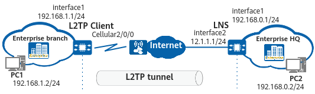

Example for Configuring an L2TP Client to Initiate an L2TP Tunnel Connection Through Dial-up (Using a Cellular Interface)
Network Requirements
In Figure 1, the HQ and branch of an enterprise are located in different cities. The branch has an Ethernet network deployed and its gateway is connected to the Internet through a 3G/4G network.
The HQ provides virtual private dial-up network (VPDN) access services for branch users and allows all branch users to access the network. The LNS only authenticates the L2TP client. In this case, you can configure the L2TP client to establish an L2TP connection with the LNS through dial-up.

In this example, interface1 and interface2 represent 10GE0/0/1 and 10GE0/0/2, respectively.

Configuration Roadmap
The configuration roadmap is as follows:
Configure the dial-up function on the cellular interface of the L2TP client.
Configure L2TP on the L2TP client.
On the L2TP client, configure a static route for accessing the public network, set the outbound interface of the route as a cellular interface, and enable the dial-up function.
Procedure
- Configure the L2TP client.
In this example, the IP address of the cellular interface on the L2TP client is automatically assigned by the carrier network.
# Configure the dial-up function on Cellular2/0/0.
<HUAWEI> system-view [HUAWEI] sysname L2TP Client [L2TP Client] interface cellular 2/0/0:1 [L2TP Client-Cellular2/0/0:1] ip address modem-alloc [L2TP Client-Cellular2/0/0:1] quit
# Configure a user-side IP address.
[L2TP Client] interface 10GE 0/0/1 [L2TP Client-10GE0/0/1] ip address 192.168.1.1 255.255.255.0 [L2TP Client-10GE0/0/1] quit
# Configure an L2TP group and specify related attributes.
[L2TP Client] l2tp enable [L2TP Client] l2tp-group 1 [L2TP Client-l2tp-group-1] tunnel name L2TP-Client [L2TP Client-l2tp-group-1] start l2tp ip 12.1.1.1 Warning: This operation may cause traffic interruption, Continue? [Y/N]:y
# Enable tunnel authentication and set a password for tunnel authentication.
[L2TP Client-l2tp-group-1] tunnel authentication Warning: This operation may cause traffic interruption, Continue? [Y/N]:y [L2TP Client-l2tp-group-1] tunnel password cipher YsHsjx_123456 Warning: This operation may cause traffic interruption, Continue? [Y/N]:y [L2TP Client-l2tp-group-1] quit
# Configure the user name and password, authentication mode, and IP address for the PPP user.
[L2TP Client] interface Dialer 1 [L2TP Client-Dialer1] link-protocol ppp [L2TP Client-Dialer1] ppp chap user huawei [L2TP Client-Dialer1] ppp chap password cipher YsHsjx_202206 [L2TP Client-Dialer1] ip address ppp-negotiate [L2TP Client-Dialer1] quit
# Configure a public network route so that the packets sent to the HQ are forwarded through the cellular interface.
[L2TP Client] ip route-static 0.0.0.0 0 Cellular2/0/0:1
# Trigger the L2TP client to establish an L2TP tunnel.
[L2TP Client] interface Dialer 1 [L2TP Client-Dialer1] l2tp-auto-client l2tp-group 1 [L2TP Client-Dialer1] quit
# Configure a private network route so that enterprise branch users can access the HQ private network.[L2TP Client] ip route-static 192.168.0.0 255.255.255.0 Dialer1
- Configure the LNS.
The device cannot function as an LNS. The configuration procedure varies according to the device type. For details, see the related documentation of the device.
Verifying the Configuration
# Run the display l2tp tunnel command on the L2TP client. The command output shows that an L2TP tunnel has been established.
[L2TP Client] display l2tp tunnel all
------------------------------------------------------------------------
Local Info:
Tunnel ID : 1 Tunnel Name : L2TP-Client
Negotiation IP : 11.1.1.2 Negotiation Port : 1701
RWS : 16 State : UP
Group Number : 1 Nego Interface : Cellular2/0/0:1
Session Number : 1 Last Fail Reason : --
Last Fail Time : --
Remote Info:
Tunnel ID : 1 Tunnel Name : AR6121H-12-42
Tunnel IP : 12.1.1.1 Tunnel Port : 1701
RWS : 16
------------------------------------------------------------------------
Total Number of L2TP Tunnel: 1
------------------------------------------------------------------------
# Run the display l2tp session command on the L2TP client. The command output shows that an L2TP session has been established.
[L2TP Client] display l2tp session all
------------------------------------------------------------------------
Local Info:
Session ID : 1 Tunnel Name : L2TP-Client
Negotiation IP : 11.1.1.2 Negotiation Port : 1701
State : UP Interface : Dialer1
Tunnel Id : 1 Nego Interface : Cellular2/0/0:1
Group Number : 1 Last Fail Reason : --
Last Fail Time : --
Remote Info:
Session ID : 1 Tunnel Name : AR6121H-12-42
Tunnel IP : 12.1.1.1 Tunnel Port : 1701
Tunnel Id : 1
------------------------------------------------------------------------
Total Number of L2TP Sessions: 1
------------------------------------------------------------------------
# PC1 in the branch can communicate with PC2 in the HQ.
Configuration Scripts
# L2TP client
#
sysname L2TP Client
#
interface Cellular2/0/0:1
ip address modem-alloc
#
interface 10GE0/0/1
ip address 192.168.1.1 255.255.255.0
#
l2tp enable
#
l2tp-group 1
tunnel name L2TP-Client
tunnel authentication
tunnel password cipher %+%##!!!!!!!!!"!!!!&!!!!*!!!!7LTnVOK_g:ByAd"JO!6)ql@8O/Y{{YL"!tV!!!!!2jp5!!!!!!7!!!!fDK^&qR0rG.#=5N@}LP-s]vF8{oyp>!!!!!!!!!!%+%#
start l2tp ip 12.1.1.1
#
interface Dialer1
link-protocol ppp
ip address ppp-negotiate
ppp chap user huawei
ppp chap password cipher %+%##!!!!!!!!!"!!!!&!!!!*!!!!7LTnVOK_g:%-^MAoOndRbGus;qF%r;vXygW!!!!!2jp5!!!!!!>!!!!pT{P+K-mrAOWz++L<3mSMogqWi.u'Oq=X\N0y=JQ%+%#
l2tp-auto-client l2tp-group 1
#
ip route-static 0.0.0.0 0 Cellular2/0/0:1
ip route-static 192.168.0.0 255.255.255.0 Dialer1
#
return